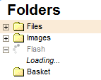

Panel folder籀w zawiera "drzewo folder籀w", po kt籀rym mo髒na nawigowa?. Foldery wykorzystywane s? do organizowania i kategoryzowania zbioru plik籀w.
Spos籀b wy?wietlania folder籀w nazwywany jest "drzewem", poniewa髒 hierarchia folder籀w prezentowana jest w postaci ga??zi, z podfolderami umieszczonymi poni髒ej i wci?tymi wzgl?dem element籀w nadrz?dnych. Panel folder籀w wykorzystuje t? sam? graficzn? reprezentacj?, kt籀ra znana jest z wi?kszo?ci wsp籀?czesnych system籀w operacyjnych.
W celu otwarcia folderu i rozwini?cia jego podfolder籀w nale髒y klikn?? ikon?
plusa ( ) znajduj?c? si?
przed nazw? folderu. Je?li ikona ta jest nieobecna, oznacza to, i髒 folder nie zawiera
髒adnych podfolder籀w.
) znajduj?c? si?
przed nazw? folderu. Je?li ikona ta jest nieobecna, oznacza to, i髒 folder nie zawiera
髒adnych podfolder籀w.

W cz??ci "?adowanie na 髒?danie" poni髒ej znajduje si? wi?cej informacji na temat procesu ?adowania zawarto?ci folder籀w w CKFinderze.
W celu zamkni?cia folderu i ukrycia (zwini?cia) jego podfolder籀w nale髒y klikn?? ikon?
minusa ( ) znajduj?c? si?
przed nazw? folderu.
) znajduj?c? si?
przed nazw? folderu.

W celu wybrania folderu i uczynienia go "folderem bie髒?cym" w CKFinderze kliknij nazw? folderu lub jego ikon?. Wybrany folder zostanie pod?wietlony za pomoc? innego koloru t?a.

Operacje zaawansowane mo髒na wykonywa? na folderze za pomoc? jego menu kontekstowego. W zale髒no?ci okoliczno?ci nast?puj?ce opcje mog? by? dost?pne:

Uwaga: Niekt籀re opcje menu kontekstowego mog? by? wy??czone (i tym samym wyszarzone) w zale髒no?ci od konfiguracji CKFindera ustawionej przez administratora systemu.
W celu utworzenia podfolderu (folderu podrz?dnego) wewn?trz istniej?cego folderu wybierz opcj? Nowy podfolder (New Subfolder) z menu kontekstowego folderu nadrz?dnego. Wpisz nazw? nowego podfolderu w oknie dialogowym, kt籀re zostanie wy?wietlone. Po nadaniu folderowi nazwy i zamkni?ciu okna nowy podfolder zostanie utworzony.

Nie wszystkie znaki mog? by? wykorzystywane w nazwach plik籀w oraz folder籀w ze wzgl?du
na ograniczenia system籀w, w kt籀rych dzia?a CKFinder. W?r籀d znak籀w, kt籀rych nie mo髒na
u髒y? w nazwach plik籀w b?d驕 folder籀w s?: \ / :
* ? " <
> oraz |.
W celu zmiany nazwy folderu nale髒y wybra? opcj? Zmie? nazw? (Rename) z jego menu kontekstowego lub u髒y? klawisza F2. Wpisz now? nazw? folderu w oknie dialogowym, kt籀re zostanie wy?wietlone, nadpisuj?c obecn? nazw?. Po nadaniu folderowi nowej nazwy i zamkni?ciu okna jego nazwa zmieni si?.

Jak wspomniano wy髒ej, nie wszystkie znaki mog? by? wykorzystywane w nazwach plik籀w oraz folder籀w ze wzgl?du
na ograniczenia system籀w, w kt籀rych dzia?a CKFinder. W?r籀d znak籀w, kt籀rych nie mo髒na
u髒y? w nazwach plik籀w b?d驕 folder籀w s?: \ / :
* ? " <
> oraz |.
Ostrze髒enie: Po zmianie nazwy folderu odno?niki prowadz?ce do niego samego b?d驕 do plik籀w w nim si? znajduj?cych, dodane na innych stronach, przestan? dzia?a?. Z tego powodu nale髒y przy korzystaniu z tej opcji zachowa? ostro髒no??.
Koszyk jest wirtualnym pojemnikiem, kt籀ry mo髒e si? przyda?, je?li chcesz wykona? okre?lone dzia?ania na grupach plik籀w. Operacje kopiowania oraz przenoszenia plik籀w opisane s? w cz??ci "Koszyk" w "Podr?czniku U髒ytkownika".
W celu usuni?cia folderu wraz z ca?? jego zawarto?ci? nale髒y wybra? opcj? Usu? (Delete) z menu kontekstowego folderu lub u髒y? klawisza Del. Niezb?dne b?dzie potwierdzenie ch?ci usuni?cia folderu w oknie dialogowym, kt籀re zostanie wy?wietlone. Po potwierdzeniu intencji i zamkni?ciu okna folder zostanie usuni?ty.
Ostrze髒enie: Operacja ta jest nieodwracalna. Po usuni?ciu folderu i jego zawarto?ci nie b?dziesz m籀g? odzyska? usuni?tych plik籀w.

Ostrze髒enie: Po usuni?ciu folderu odno?niki prowadz?ce do niego samego b?d驕 do plik籀w w nim si? znajduj?cych, dodane na innych stronach, przestan? dzia?a?. Z tego powodu nale髒y przy korzystaniu z tej opcji zachowa? ostro髒no??.
Najwa髒niejsz? r籀髒nic? pomi?dzy CKFinderem a strukturami drzewa folder籀w obecnymi w systemach operacyjnych komputer籀w jest to, 髒e w CKFiderze foldery ?adowane s? na 髒?danie. Oznacza to, 髒e aplikacja nie ?aduje pe?nej struktury drzewa folder籀w po uruchomieniu, a zamiast tego pokazuje jedynie jej podzbi籀r po rozwini?ciu folderu. Opcja ta dost?pna jest w wi?kszo?ci zaawansowanych aplikacji internetowych takich jak CKFinder i pozwala zar籀wno ograniczy? transfer z serwera, jak i skr籀ci? czas ?adowania.
By wskaza?, 髒e foldery s? ?adowane, CKFinder mo髒e wy?wietli? komunikat ?adowanie (Loading)... po rozwini?ciu folderu:

Komunikat ten automatycznie zniknie, gdy wszystkie podfoldery zostan? za?adowane.